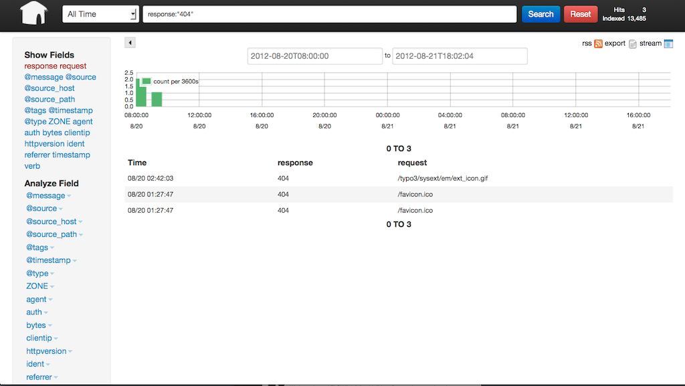

| z, ? | toggle help (this) |
| space, → | next slide |
| shift-space, ← | previous slide |
| d | toggle debug mode |
| ## <ret> | go to slide # |
| c, t | table of contents (vi) |
| f | toggle footer |
| r | reload slides |
| n | toggle notes |
| p | run preshow |
TYPO3 Conference Asia 2012
Christian Trabold
Aug 21 02:47:46 machine http://host/: - cms:
Locking [simple::...]: Released lock
Aug 21 02:47:48 machine http://host/: - Core:
File "/var/www/favicon.ico" was not found.
192.168.156.1 - - [20/Aug/2012:15:24:23 +0000]
"GET /typo3/ajax.php
HTTP/1.1" 200 7385 "http://host/index.php"
"Mozilla/5.0 (Macintosh; Intel Mac OS X 10.7; rv:14.0)
Gecko/20100101 Firefox/14.0.1"
192.168.156.1 <= Who?
[20/Aug/2012:15:24:23 +0000] <= When?
"GET /index.php <= What?
HTTP/1.1" 200 <= How?
"Mozilla/5.0 (Macintosh…) <= Who?
Gecko/20100101 Firefox/14.0.1" <= Who?
192.168.156.1 <= Who?
[20/Aug/2012:15:24:23 +0000] <= When?
"GET /index.php?id=1 or 1=1 -- <= What?
HTTP/1.1" 200 <= How?
"Mozilla/5.0 (Macintosh…) <= Who?
Gecko/20100101 Firefox/14.0.1" <= Who?
And the best…
t3lib_div::sysLog($msg, $extKey, $severity=0)This should be implemented around the source code, including the Core and both frontend and backend, logging serious errors.
… and for every action you find interesting!
To implement the sysLog in your applications:
t3lib_div::sysLog(
'[write message in English here]',
'extension key'
);0 info (default)
1 notice
2 warning
3 error
4 fatal$TYPO3_CONF_VARS['SYS']['systemLog'] = 'syslog,USER';USER namespace avoids conflicts with other logs
$TYPO3_CONF_VARS['SYS']['systemLogLevel'] = '0';$TYPO3_CONF_VARS['SYS']['belogErrorReporting'] = 0;== More DB performance! :)
$TYPO3_CONF_VARS['SYS']['systemLog'] = 'syslog,USER';
$TYPO3_CONF_VARS['SYS']['systemLogLevel'] = '0';
$TYPO3_CONF_VARS['SYS']['belogErrorReporting'] = 0;Also make shure you enable PHP error logging in php.ini
log_errors = On
Q: Why do I need this when I have Google Analytics? A: Because you can manage your data more flexible
Convert different log formats into structured JSON objects
Because the log formats differe A LOT, we need to normalize and enrich them
fetch convert send
TYPO3 ---> SYSLOG <----- LOGSTASH ---> WEB INTERFACE
Web Interfaces like Kibana, Graylog2
Normalize logs & creates structured JSON objects from plain text
Focused on searching logs and statistics
Focused on reporting and streamlining logs
Searching is a sub-feature
